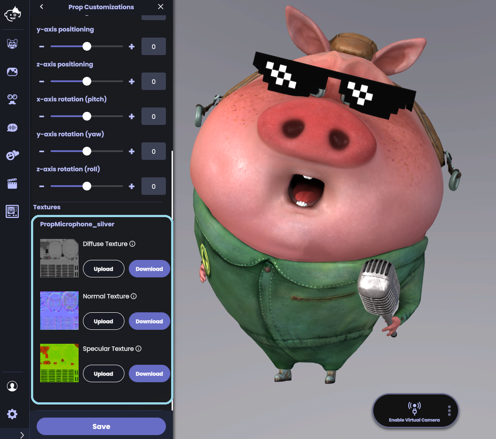
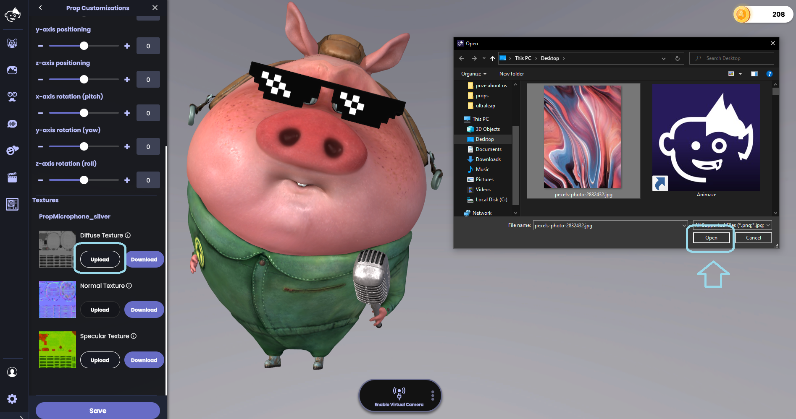
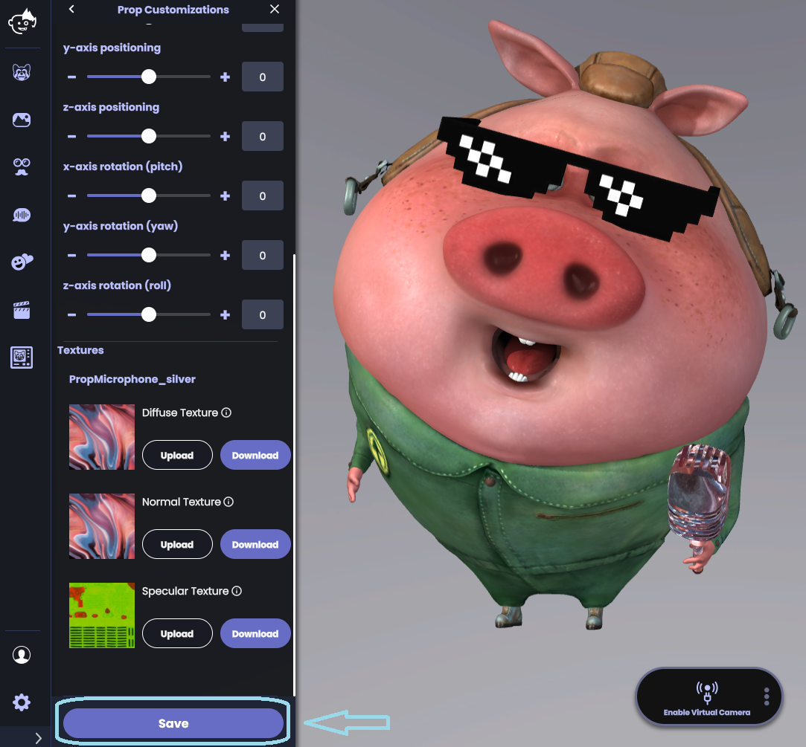

Animaze Desktop: How can I customize my prop?
If you want to further customize your prop, you consider changing your prop’s texture by scrolling down in the props customization drawer until you find the retexturing menu

The Textures menu will list all prop textures that you can replace. If you want to enhance the existing texture in an editing program such as photoshop or paint, download the texture source files by clicking “Download Source File.”
To replace a texture with another image entirely or with the updated texture from the step above, click “Upload”. You can replace a texture with any common image file format (e.g., .png, jpg). For best results, use a square image as your new texture. Select the texture from a folder on your computer and hit OPEN.

Hit Save and enjoy your re-textured Prop! For more information on adding custom textures to your Prop, check out our Prop retexturing FAQ.

Note: For most Props, replacing the diffuse texture will have the largest effect. Uploading a new diffuse texture will effectively re-skin your Prop. Experiment by uploading new textures to create your own one-of-a-kind prop!